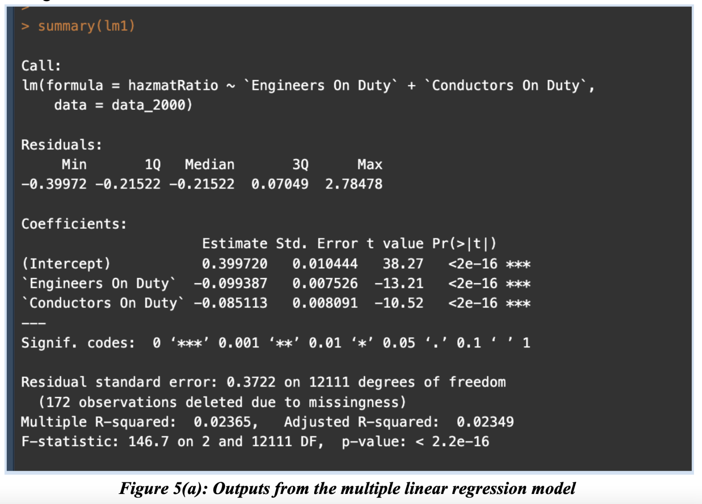
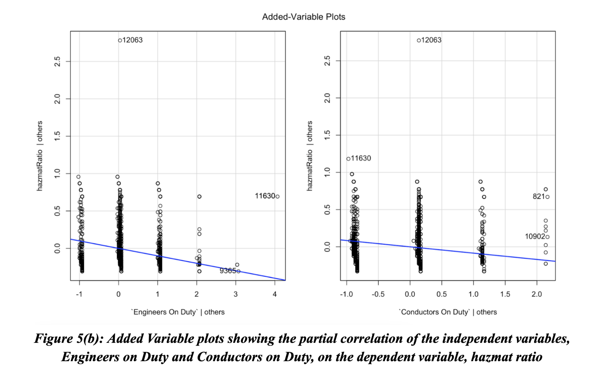
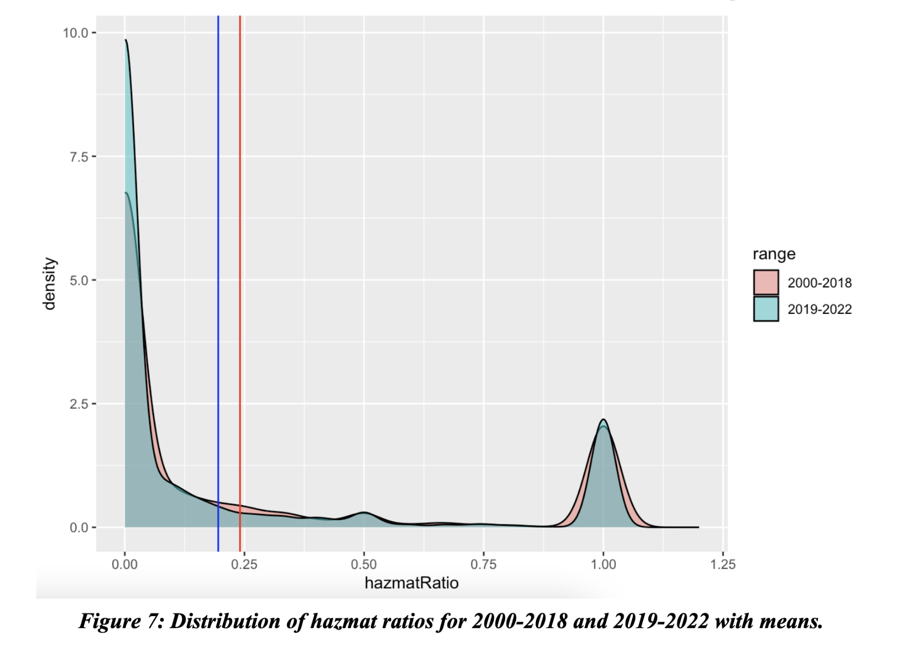

Train Accidents in the U.S.

Have U.S. railroad operations become more dangerous recently?
This project was inspired by recent news of the 2023 Norfolk Southern derailment in Ohio. This train accident and incident data was obtained from the Federal Railroad Administration. Specifically, we looked at data colleceted between 2000 and 2022.
One way of assessing how dangerous a rail accident is to use the number of train cars that were damaged out of the total number on the train. However, the dataset did not contain this information. Instead, we assessed the number of damaged hazmat cars, as we had access to the total number that were on board. This value was transformed into a hazmat ratio, which is a ratio between the damaged hazmat cars out of the total number of hazmat cars.
Research question 1
Is there a significant relationship between the number of engineers and conductors on a train (dependent variables) and the ratio of hazmat cars that are damaged in a rail accident (independent variable)?
The Government Accountability Office News outlets reported how rail companies reduced the number of staff by 20%.
Statistical tests
- Multiple linear regression
- This helped us determine if an increase in derailments is correlated with having less staff
- Added variable plot
- Visualzed the partial correlation between the multiple independent variables
 
Conclusion
A significant correlation was found between a reduced number of conductors and engineers and an increase in the ratio of damaged hazmat cars.
Research question 2
Is there a significant relationship between the range of years that a railroad accident occurred (dependent variable) and the ratio of hazmat cars that are damaged in a rail accident (independent variable)?
Statistical tests
- Two-tailed Mann-Whitney U test
- Determined if if there is a statistically significant difference in the hazmat ratios between the year ranges of 2000-2018 and 2019-2022
- The data was not normally distributed, so a two sample t-test could not be used.

Conclusion
Using the Mann-Whitney U test, the mean ratio of damaged hazmat cars has fallen in 2019-2022 when compared to 2000-2018.